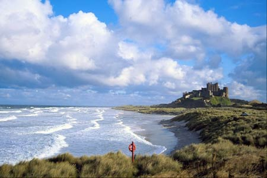

Perfektes Digitales Fotografieren
Gute Bilder sind mehr als technisch einwandfreie Aufanhmen: Sie werden nach gestalterischen Gesichtspunkten fotografiert
Belichtung


In der Fotografie versteht man unter der Belichtung das Produkt aus der
Lichtintensit�t und der Dauer der Lichteinwirkung. Die Lichtintensität wird
durch die Blende gesteuert, die Belichtungsdauer durch den Verschluss. Blende
und Verschluss sind reziprok aufeinander abgestimmt.
- Ein öffnen der Blende führt daher zu einer Verkürzung der Belichtungszeit; eine Blendenstufe entspricht einer Zeitstufe.
- Die Blende ist außerdem ein wichtiges Mittel für die Bildgestaltung, da sie die Schärfentiefe steuert. Dies ist der vom Auge als scharf gesehene Bereich eines tiefengestaffelten Motivs.
- Große Blendenöffnungen ergeben eine geringe Schärfentiefe und umgekehrt.
- Bei Landschaftsaufnahmen wird man daher eine möglichst kleine Blende wählen, bei Portraits eine große, damit sich die Person vom Hintergrund löst, der verschwommen erscheint.
Belichtungsprogramme
Digitalkameras bieten meist eine ganze Reihe von Belichtungsautomatiken:
- Bei der Programmautomatik stellt die Kamera sowohl Zeit als auch Blende selbstständig ein.
- Bei der Zeitautomatik entscheidet der Fotograf, mit welcher Blende er die Aufnahme machen will. Die Kamera ermittelt dazu die passende Zeit.
- Bei der Blendenautomatik wird die Zeit vorgegeben und die Blende automatisch ermittelt.
Zusätzlich bieten einige Kameras Motivprogramme an:
- Die Portraitautomatik arbeitet mit großen Blendenöffnungen.
- Die Sportautomatik versucht möglichst kurze Belichtungszeiten zu erreichen.
- Die Landschaftsautomatik ist um große Schärfentiefe bemüht.
- Profis arbeiten meist manuell, um die völlige Entscheidungsfreiheit bei ihren Aufnahmen zu haben.